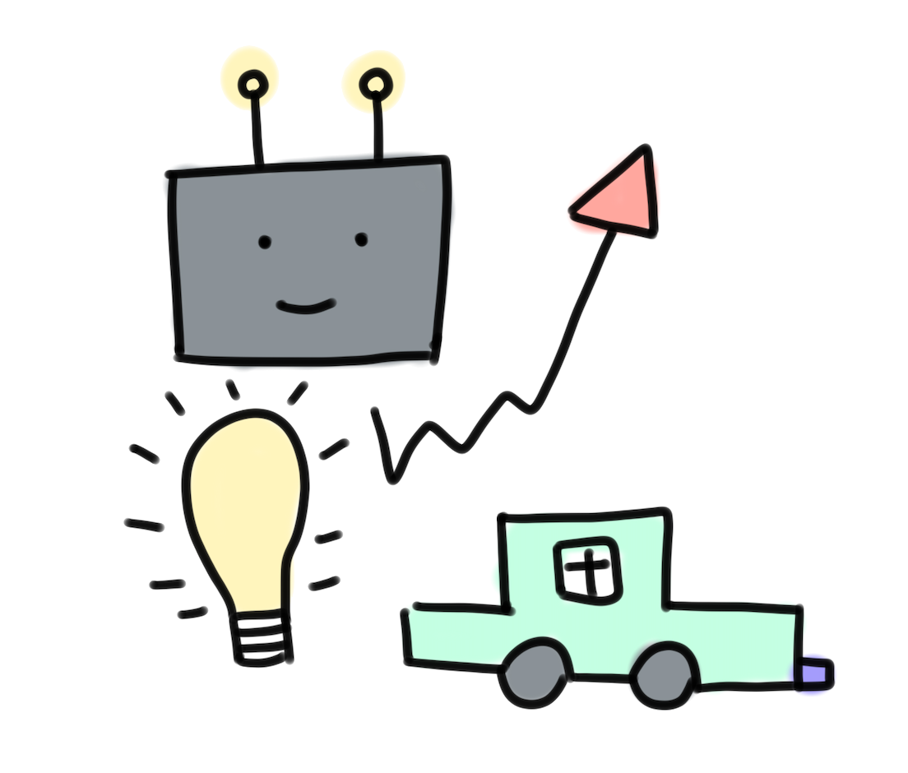

Welcome to my creative platform! I'm Kelly Cao , a rising senior at Wellesley College, pursuing a major in Computer Science and a minor in Psychology. My curiosity lies at the heart of tech policies and the intriguing interplay between the internet, society, and cutting-edge technologies. Currently, I am collaborating with Professor John Akula, a law professor at MIT Sloan, to delve deeper into subjects like regulating Big Tech and exploring the nuances of Section 230. These experiences have ignited my passion for AI governance, software engineering, and tech counseling. Through this platform, I'm excited to share my creative endeavors, projects, and musings with you. Embracing the belief "be brave, not perfect," I present everything on this page as a work-in-progress. It's a testament to the continuous evolution of ideas and the journey of my growth and exploration. Enjoy!! .
Here are some projects that I have worked on from class and from past internships:
CS 220 Human Computer Interaction Final Project (UX/UI)
ACS CAS Common Chemistry Division Python Toolkit and Lesson Plan
24.134 Experience Ethics Final Project
16.810 D-PRO (Rapid Prototyping)
Outside of academics/work, you can find me near any body of water (oceans are my favorite) or watching old Cantonese movies (horror is my fav genre). When I have time, I enjoy learning how to cook from my grandma and trying out new baking recipes. Learn more about my other interests here: